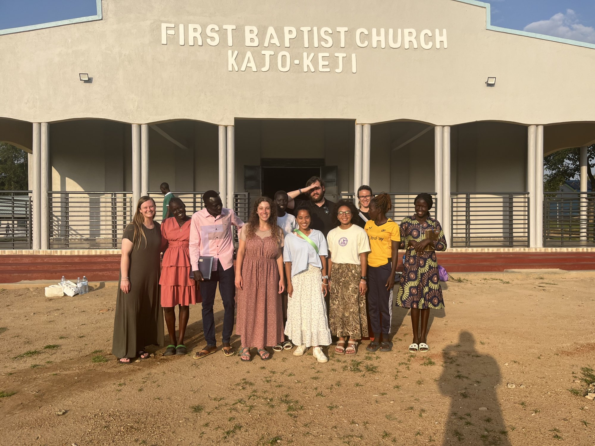

Belonging before belief
You do not have to have it all figured out to find a home here. Questions are welcome at the table.
A place to belong in every season
First Baptist Church, Kajo-Keji is a local church learning to live the way of Jesus—with open doors, honest questions, and room for every story.

We are a growing, intergenerational community in Kajo-Keji—rooted in Scripture, shaped by grace, and sent into the world with open hands.
Whether you are exploring faith, finding your way back, or looking for a place to put down roots, there is space for you here. Come for the worship and stay for the people.
Read our full storyWhat holds us together
You do not have to have it all figured out to find a home here. Questions are welcome at the table.
We practice the way of Jesus in ordinary places: around dinner tables, in hard conversations, and with our neighbors.
Explore our beliefsOur hope is not only for Sunday. We partner with local neighbors and families to make our community more whole.
Explore the community
Sunday worship, midweek fellowship, and monthly prayer rhythms.
View schedule 02Kids & families, worship music, and neighborhood small groups.
Explore ministries 03Community meals, serve days, and seasonal celebrations.
See calendar 04Directions, what to wear, and what to expect on your first Sunday.
First-timer guideChurch is not a building we visit. It is a people we become.— First Baptist Church, Kajo-Keji
Giving is one of the ways we join in the work God is already doing in Kajo-Keji. Thank you for making room for more.
Give online“Every gift—time, attention, encouragement, resources—helps make this place more generous.”
First Baptist Church, Kajo-Keji generosity teamLet’s talk
For prayer requests, membership, ministry information, or a simple hello, reach out to our church office.